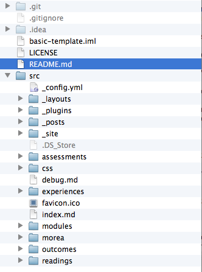
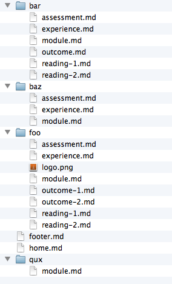
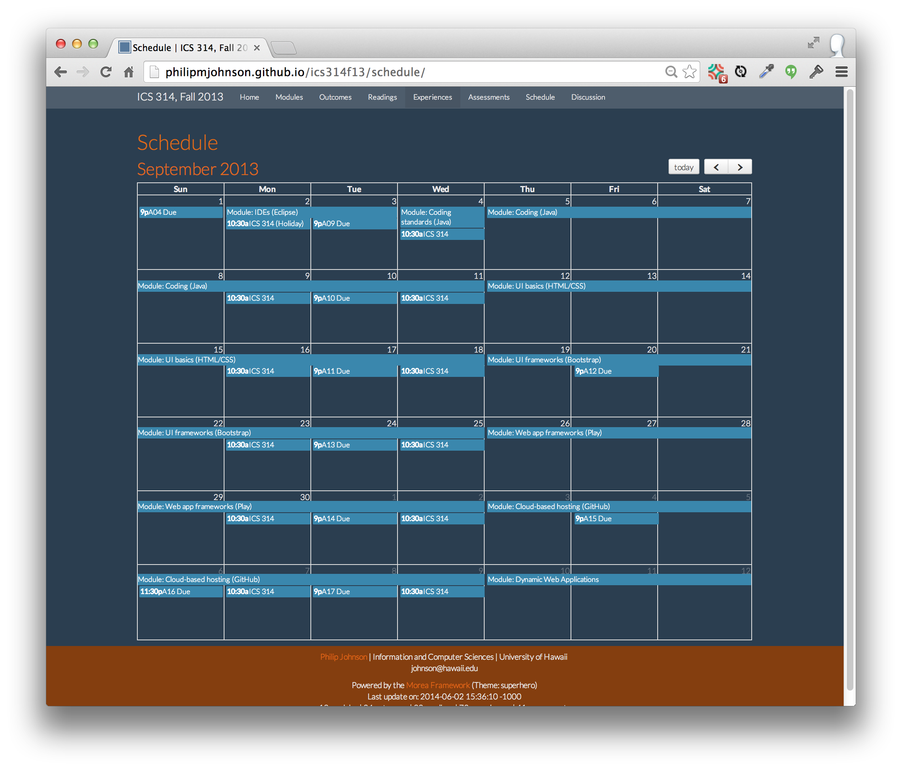
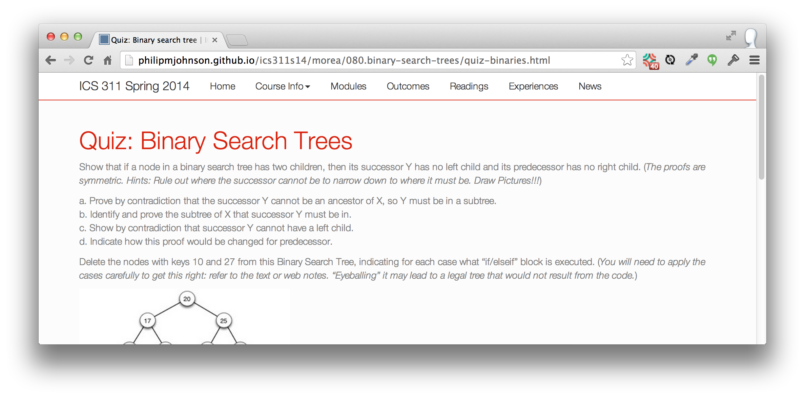
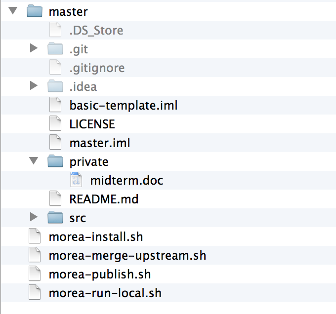

Basic concepts
To begin, here are the most important principles underlying the framework.
Morea defines five "entity types": module, outcome, reading, experience, and assessment.
A module is a container that holds a set of outcomes, readings, experiences, and assessments related to course content. Modules have a sort order, which allows you to organize modules into a sequence. Most courses consist of 6 to 30+ modules. A module can contain zero to many instances of outcomes, readings, experiences, and assessments. It is possible to define a module without zero outcomes, zero readings, zero experiences, and zero assessments, though we're not sure of the utility of such a module.
An outcome represents some kind of knowledge or capability that the student should acquire as a result of the readings and experiences in the associated module. A module can have multiple outcomes. Conversely, the same outcome can be associated with multiple modules. We find that a useful way to organize and express learning outcomes is through Bloom's revised taxonomy, which classifies outcomes into six categories: remembering, understanding, applying, analyzing, evaluating, and creating. The latter outcomes (analyzing, evaluating, and creating) are supposed to represent "high-order" cognitive skills.
A reading is an artifact that the student studies: it represents "passive" learning. Readings are typically chapters in a book, online web pages, and so forth.
In contrast to a reading, an experience represents a more "active" form of learning in which the student solves problems or performs other activities in order to acquire understanding and capability. Morea distinguishes between readings and experiences because modules that contain only readings without experiences will tend to have outcomes associated with lower levels of Bloom's taxonomy, while modules containing a mixture of readings and experiences are more likely to support outcomes at higher levels of Bloom's taxonomy.
An assessment is an activity that evaluates the success of the student in achieving the educational goals of the module. In the best case, the educational goals of the module are adequately expressed by learning outcomes, in which case each assessment should relate to one or more outcomes. The graphic Applying Bloom's Taxonomy in your Classroom provides various examples of how outcomes and assessments can be linked together. While Morea can help make linkages between outcomes and assessments clear, it is common to assess skills not encapsulated by outcomes, or desire outcomes that are not assessed.
{kind=link}
Morea generates five "views" of the content, each organized according to an entity.
Morea sites contain a navigation bar at the top of the page with links to pages that organize the content according to each of the five entities: modules, outcomes, readings, experiences, and assessments. For example, here is an example of the Readings page:

And here is an example of the Outcomes page:

You can see that the two pages highlight a single entity type but provide links to other entities for context.
We believe that presenting the content organized according to different entity types makes it easier for students and educators to understand the conceptual structure of the course. For educators, it also provides a useful way to see if the course is structurally coherent. For example, when the learning objectives are examined together, do they create a coherent set? For another example, are there assessments for each module, and if not, is that appropriate?
Every Morea entity has its own markdown file.
Every instance of a Morea entity (module, outcome, reading, experience, assessment) is represented by a single markdown file. There can also be other markdown files and other non-markdown files (such as the logo image file associated with each module).
All of your course content is located in the src/morea/ directory.
When you first clone a Morea site, you will find a potentially bewildering number of files and directories. For example:

This organization exists because the Morea framework is basically just a Jekyll site with a custom plugin to process the Morea markdown files.
Fortunately, the only files you will typically need to manage are all located in the src/morea directory. Here is an example of the src/morea directory from the basic-template system:

This folder contains all of the files you will want to manage as part of your course content.
You can organize the src/morea/ directory any way you like.
The Morea framework does not care how you organize the files within the src/morea directory. For example, you can place all of your files at the top level of this directory. Alternatively, and more typically, you can create subdirectories within the src/morea directory, one per module, as shown in the previous screenshot.
In addition, Morea does not care how you name files. In fact, it is possible to use the same file name in multiple modules (i.e. foo/module.md, bar/module.md, baz/module.md, and qux/module.md in the screenshot above)
It is the "front matter" in each Morea entity file that uniquely identifies it.
Morea does not care about directory structure nor file name, because it uses the front matter in the markdown file to uniquely identify each Morea entity and determine how they relate to each other. "Front matter" is a Jekyll term for key-value pairs represented via YAML notation and separated from the rest of the file contents by three dashes. For example, here is the front matter for a hypothetical module entity:
---
title: "Learn to Foo"
morea_id: foo
morea_outcomes:
- foo-outcome1
- foo-outcome2
morea_readings:
- foo-reading
morea_experiences:
- foo-experience
morea_assessments:
- foo-assessment
morea_type: module
morea_icon_url: /morea/images/foo.png
morea_labels:
- required
- intro
morea_sort_order: 2
---
So, even though each module (foo, bar, baz, qux) in the basic template system contains a file with the name module.md, the front matter in that file will be different in order to represent the unique structure of the four modules.
Note that while you can use the same file name, you don't have to. You could name the file containing the front matter for the Foo module "module-foo.md". You could even name it "outcome.md" (although that would be really confusing.) The point is: Morea does not utilize file name information.
We will explain the front matter in more detail later in this User Guide.
Morea makes a "mirror image" of the src/morea directory in the published HTML site.
Because we want you to provide course content in the src/morea directory, and because course content can include (for example) image files, Morea creates a kind of "mirror image" of the src/morea directory in the published site so that your content can include links within itself as well as to external sites.
The basic rule is that markdown files are converted to HTML in the published site, and all other files get copied over without change. So, for example, here is the src/morea directory (on the left) and the site's published morea directory (on the right):

As you can see, the markdown files have become HTML, and the sole non-markdown file (logo.png) has been copied over unchanged. The directory structure below the morea/ directory is unchanged.
Related systems
Another way to understand Morea is by contrasting it with other tools used by educators to create course content.
GitBook, like Morea, creates educational websites using Markdown and Git. If you want to write a textbook, GitBook is a better choice. Morea is preferred when you want to create a course curriculum from a variety of sources including your own and/or other sources, and when you want to make learning objectives and assessments explicit.
Blackboard is one instance of an "enterprise learning management system (LMS)" that provides comprehensive support for all
aspects of course management: content management, testing, grading, etc. (Others include eFront, Moodle, Ilias, Dokeos, Sakai,
Claroline, Atutor, and Olat).
Morea provides a small subset of the capabilities of these systems, but is oriented toward the needs of institutions
rather than individual teachers.
Metacademy is a site for community curated educational content. Unlike Morea, Metacademy supports a single version of curriculum material for any given topic. In contrast, Morea tries to make it as easy as possible for each educator to have their own, slightly (or radically) different version of curriculum material for any given topic. It's much like the difference between centralized version control (i.e. SVN) where there is always a single "golden" version of a system, and distributed version control (i.e. git) where there can be many "different but equal" versions of a system.
If you know of a related system, please let us know and we'll include it here.
Anatomy of a Module
This section overviews the structure of the module Foo in the basic-template system. Here is a graphic to help illustrate the various components:

The top row illustrates various "source" files, and the bottom row illustrates various "output" HTML pages produced from these files.
The top right window shows the contents of the src/morea/foo directory. This directory defines the content associated with the Foo module. Note that the directory contains two files that are not associated with the Foo module. This is unusual but permissible in Morea.
The second window on the top row shows the content of module.md. The content of this file is mostly Front Matter, and provides the definition of the Foo module. The outcomes, readings, experiences, and assessments associated with the Foo module are all referenced by unique IDs.
The third and fourth windows on the top row show the content of two files that define a reading and an experience entity.These entities have unique IDs that are referenced in the definition of the Foo module, and that is the way that Morea connects them together.
The bottom row shows a variety of pages produced by Morea. Because a module was defined in the module.md file, it will show up in the modules/ page. Clicking on the link in the modules page takes you to a page which details the contents of that module. As you can see, the content associated with each of the unique IDs referenced in the module.md file shows up in this page. The other pages illustrate the content (such as a Reading) will not only appear in the module (or modules) with which it is associated, but also in the Readings page.
In summary, Morea markdown files create a set of entities, each of which are identified by a unique ID. The contents of a module (outcomes, readings, experiences, and assessments) are specified by providing unique IDs. The relationship between modules and its content entities is many-to-many. First, a module can refer to multiple outcomes, readings, experiences, and assessments. Conversely, any given outcome, reading, experiences, and assessment can appear in multiple modules.
Morea entity types
This section documents the structure and behavior of the five Morea entity types.
Module
Modules are represented by a markdown file where the Front Matter defines the structure of the module and the body of the file (typically a sentence or two) summarizes the module contents.
Sample module markdown file contents
---
title: "Learn to Foo"
published: true
morea_id: foo
morea_outcomes:
- outcome1
morea_readings:
- reading1
morea_experiences:
- experience1
morea_assessments:
- assessment1
morea_type: module
morea_icon_url: /morea/foo/logo.png
morea_labels:
- required
- intro
morea_sort_order: 1
---
Provides everything you need to know to learn to Foo.
Module Front Matter keywords and values
| Keyword | Required? | Value |
|---|---|---|
| morea_type | required | module |
| morea_id | required | A symbol (letters, numbers, hyphens, underscores) identifying this Morea entity. Morea IDs must be unique. The Morea compiler will terminate with an error if it encounters two markdown files containing the same Morea ID. |
| title | required | A string indicating the title of the module. The module title appears in all of the top-level pages whereever the module is referenced. |
| published | optional | If true, the module will appear in the output. If false, the module will not appear. Default: true |
| morea_outcomes | optional | If present, a list of Morea IDs indicating the Outcomes associated with this module. |
| morea_readings | optional | If present, a list of Morea IDs indicating the Readings associated with this module. |
| morea_experiences | optional | If present, a list of Morea IDs indicating the Experiences associated with this module. |
| morea_assessments | optional | If present, a list of Morea IDs indicating the Assessments associated with this module. |
| morea_icon_url | optional | If present, the URL of the icon appearing with this module in the modules/ page. For best effect, the icon image should be square. Defaults to modules/default-icon.png. |
| morea_labels | optional | If present, a list of strings that appear as badges in the module's thumbnail on the modules/ page. |
| morea_sort_order | optional | If present, an integer used to sort the set of published modules for presentation from low to high. Defaults to zero. |
{kind=link}
Module body text
In a module definition, the text following the Front Matter is typically one to two sentences that summarizes the module content. This text appears with the module's thumbnail in the module summary page and at the top of the module's page.
Outcome
Each outcome represents knowledge or capability that the educator hopes the students will acquire as a result of the module or modules in which this outcome appears.
Sample outcome markdown file contents
---
title: "Remember concepts of asymptotic growth."
published: true
morea_id: outcome-growth
morea_type: outcome
morea_sort_order: 30
morea_labels:
- "Bloom: Remember"
---
Learn the concepts of asymptotic growth and recognize them in context.
Outcome Front Matter keywords and values
| Keyword | Required? | Value |
|---|---|---|
| morea_type | required | outcome |
| morea_id | required | A symbol (letters, numbers, hyphens, underscores) identifying this Morea entity. Morea IDs must be unique. The Morea compiler will terminate with an error if it encounters two markdown files containing the same Morea ID. |
| title | required | A string indicating the title of this outcome. The outcome title appears in all of the top-level pages whereever the outcome is referenced. |
| published | optional | If true, the outcome will appear in the output. If false, the outcome will not appear. Default: true. Note: if an outcome is not referenced by at least one module, it will not appear in the output even if published is true. |
| morea_labels | optional | If present, a list of strings that appear as badges in this outcome's description. |
| morea_sort_order | optional | If present, an integer used to sort the set of published outcomes for presentation from low to high in the outcomes/ page. Defaults to zero. |
Outcome body text
In an outcome definition, the text following the Front Matter describes the outcome. This text appears both in all of the Module pages referring to this outcome, as well as on the Outcomes page.
Reading
Each reading represents a "passive" learning opportunity associated with the module. There are two types of readings:
- Readings in which the material is "inline", as the body text associated with the file.
- Readings in which the material is "online", and the Front Matter provides a link to that material.
Whether or not the reading is "inline" or "online" depends upon whether the keyword morea_url appears in the Front Matter. Here are examples of each:
Sample "inline" reading markdown file contents
---
title: "Chapter 3 Notes"
published: true
morea_id: reading-notes-3
morea_summary: "Introduction to asymptotic analysis"
morea_type: reading
morea_sort_order: 9
morea_labels:
- Notes
---
## Outline
1. Intro to Asymptotic Analysis
2. Big-O
3. Omega
4. Theta
(remaining inline reading material deleted)
Sample "online" reading markdown file contents
---
title: "CLRS 3 - Growth of functions"
published: true
morea_id: reading-cormen-3
morea_summary: "Asymptotic notation, standard notation, and common functions."
morea_type: reading
morea_sort_order: 8
morea_url: http://mitpress.mit.edu/books/introduction-algorithms
morea_labels:
- Textbook
- 22 pages
----
Reading Front Matter keywords and values
| Keyword | Required? | Value |
|---|---|---|
| morea_type | required | reading |
| morea_id | required | A symbol (letters, numbers, hyphens, underscores) identifying this Morea entity. Morea IDs must be unique. The Morea compiler will terminate with an error if it encounters two markdown files containing the same Morea ID. |
| title | required | A string indicating the title of this reading. The title appears in all of the top-level pages where ever this entity is referenced. |
| published | optional | If true, this reading will appear in the output. If false, the reading will not appear. Default: true. Note: if a reading is not referenced by at least one module, it will not appear in the output even if published is true. |
| morea_url | optional | If present, specifies the URL of an external reading. If absent, then the body text of this file is the reading. |
| morea_labels | optional | If present, a list of strings that appear as badges in this reading's description. |
| morea_sort_order | optional | If present, an integer used to sort the set of published readings for presentation from low to high when listed as part of the module. Defaults to zero. |
Reading body text
When the morea_url keyword is provided to specify the URL, then no body text need appear. When the morea_url keyword is absent, then the body text should be the intended reading.
Experience
Each experience represents an active learning opportunity associated with the module. Experiences appear as the body text of the file.
Sample experience markdown file contents
---
title: "Asymptotic concepts"
published: true
morea_id: experience-asymptotic-concepts
morea_type: experience
morea_summary: "Practice analysis of functions with respect to their limiting behavior"
morea_sort_order: 1
morea_labels:
- In class
---
## Asymptotic Concepts
#### 5 points
**1\. (1 pt)** We can extend asymptotic notation to the case of two parameters n and m that can go to infinity independently at different rates. For example, we denote by O(g(n,m)) the set of functions:
> O(_g_(_n_,_m_)) = {_f_(_n_,_m_) : there exists positive constants _c_, _n_0
and _m_0 such that 0 ≤ _f_(_n_,_m_) ≤ _c__g_(_n_,_m_) for all _n_ ≥ _ _n0 or
_m_ ≥ _m_0}
Give a corresponding definition for Θ(_g_(_n_,_m_)).
---
(remaining experience material deleted)
Experience Front Matter keywords and values
| Keyword | Required? | Value |
|---|---|---|
| morea_type | required | experience |
| morea_id | required | A symbol (letters, numbers, hyphens, underscores) identifying this Morea entity. Morea IDs must be unique. The Morea compiler will terminate with an error if it encounters two markdown files containing the same Morea ID. |
| title | required | A string indicating the title of this experience. The title appears in all of the top-level pages where ever this entity is referenced. |
| published | optional | If true, this experience will appear in the output. If false, the experience will not appear. Default: true. Note: if an experience is not referenced by at least one module, it will not appear in the output even if published is true. |
| morea_labels | optional | If present, a list of strings that appear as badges in this experience's description. |
| morea_sort_order | optional | If present, an integer used to sort the set of published experiences for presentation from low to high when listed as part of the module. Defaults to zero. |
Experience body text
The body text should describe the experience in markdown format.
Assessment
Each assessment represents the results of some activity intended to determine whether or not the students have acquired the knowledge and/or capabilities intended by the module's readings and experiences.
Assessments appear as the body text of the file, typically as charts. We recommend that you publish the assessment results in a manner that preserves student anonymity.
For each assessment, you can provide a list of outcomes that the assessment checked. This list of outcomes will be listed with the assessment, and the assessment will appear with the outcome.
Publishing assessment results has a number of benefits:
- Students get a sense for both how they are performing relative to others during the course.
- Students understand how the educator is attempting to assess the learning associated with the module.
- Assessment results become part of the "public record" associated with the module, facilitating future modification and improvement of the assessment technique.
To present assessment results as charts, you can include Javascript directly in the markdown file, as illustrated in the following example:
Sample assessment markdown file contents
---
title: "Ability to recall asymptotic concepts"
published: true
morea_id: assessment-asymptotic-concepts
morea_type: assessment
morea_sort_order: 1
morea_outcomes_assessed:
- outcome-technical-writing
morea_labels:
- "Bloom: Remember"
---
Assessed ability to remember asymptotic concepts through an in-class multiple choice exam:
<link rel="stylesheet" href="http://cdn.oesmith.co.uk/morris-0.4.3.min.css">
<script src="//cdnjs.cloudflare.com/ajax/libs/raphael/2.1.0/raphael-min.js"></script>
<script src="http://cdn.oesmith.co.uk/morris-0.4.3.min.js"></script>
<div class="well">
<div id="assessment" style="height: 250px;"></div>
</div>
<script>
Morris.Bar({
element: 'assessment',
hideHover: false,
data: [
{ y: 'Very satisfactory (%)', num: 15 },
{ y: 'Satisfactory (%)', num: 55 },
{ y: 'Unsatisfactory (%)', num: 25 },
{ y: 'Absent (%)', num: 5 },
],
xkey: 'y',
ykeys: ['num'],
resize: true,
labels: ['Students']
});
</script>
Assessment Front Matter keywords and values
| Keyword | Required? | Value |
|---|---|---|
| morea_type | required | assessment |
| morea_id | required | A symbol (letters, numbers, hyphens, underscores) identifying this Morea entity. Morea IDs must be unique. The Morea compiler will terminate with an error if it encounters two markdown files containing the same Morea ID. |
| title | required | A string indicating the title of this assessment. The title appears in all of the top-level pages where ever this entity is referenced. |
| published | optional | If true, this assessment will appear in the output. If false, the assessment will not appear. Default: true. Note: if an assessment is not referenced by at least one module, it will not appear in the output even if published is true. |
| morea_labels | optional | If present, a list of strings that appear as badges in this assessment's description. |
| morea_sort_order | optional | If present, an integer used to sort the set of published assessment for presentation from low to high when listed as part of the module. Defaults to zero. |
| morea_outcomes_assessed | optional | If present, a list of outcome morea_ids which are checked by this assessment. |
Assessment body text
The body text should describe the assessment in markdown format.
Content development
The material in this section assumes that you have set up your local environment according to the instructions in the QuickStart page.
Develop by duplicating modules
Development of curriculum content seems to be easiest by organizing module material by directories. Then, to create a new module, just:
- Duplicate an existing module directory using your operating system commands.
- Edit the module definition markdown file. Define a new unique ID for that module, and change the references to outcome IDs, reading IDs, experience IDs, and assessment IDs appropriately.
- Edit the markdown files within the new directory files to define the outcomes, readings, experiences, and assessments associated with the new module.
- Check to make sure the new module displays correctly in your local browser and that the sort order numbers result in the correct ordering on all pages.
Edit>Compile>Review>Publish
Development of course content with Morea follows this general sequence:
- Edit: Modify the files in the morea/ directory.
- Compile: Invoke the "Morea compiler" (i.e. jekyll) using the morea-run-local.sh script
- Review: Fix any errors that occur, or if no errors occur, then review the results at http://localhost:4000.
- Publish: When satisfied with your content, publish it using the morea-publish.sh script.
Edit phase
Just edit the files using any programming text editor (vi, emacs, sublime, etc.) Don't use a word processor such as Word.
Compile phase
The morea-run-local script invokes the Jekyll compiler in "watch" mode, which means it will automatically recompile the markdown files whenever it notices that they have been edited. So, for example, this is what happens when morea-run-local is invoked in the basic-template system:
[~/projecthosting/github/morea-framework/basic-template]-> ./morea-run-local.sh
+ jekyll serve --source /Users/johnson/projecthosting/github/morea-framework/basic-template/master/src --destination /Users/johnson/projecthosting/github/morea-framework/basic-template/master/src/_site --baseurl '' --watch
Configuration file: /Users/johnson/projecthosting/github/morea-framework/basic-template/master/src/_config.yml
Source: /Users/johnson/projecthosting/github/morea-framework/basic-template/master/src
Destination: /Users/johnson/projecthosting/github/morea-framework/basic-template/master/src/_site
Generating...
Starting Morea page processing...
Processing file: assessment.md
Processing file: experience.md
Processing file: module.md
Processing file: outcome.md
Processing file: reading-1.md
Processing file: reading-2.md
Processing file: assessment.md
Processing file: experience.md
Processing file: module.md
Processing file: assessment.md
Processing file: experience.md
Processing file: logo.png
Processing file: module.md
Processing file: outcome-1.md
Processing file: outcome-2.md
Processing file: reading-1.md
Processing file: reading-2.md
Processing file: footer.md
Processing file: home.md
Processing file: module.md
Warning: module.md missing optional front matter: morea_icon_url (set to /modules/default-icon.png)
Warning: module.md missing optional front matter: morea_icon_url (set to /modules/default-icon.png)
Warning: module.md missing optional front matter: morea_outcomes, morea_readings, morea_experiences, morea_assessments, morea_icon_url (set to /modules/default-icon.png)
Summary:
20 total, 19 published, 0 unpublished, 19 markdown, 1 other
4 modules, 3 outcomes, 4 readings, 3 experiences, 3 assessments
0 errors, 7 warnings
done.
Auto-regeneration: enabled
Server address: http://0.0.0.0:4000
Server running... press ctrl-c to stop.
This normal output shows the markdown files found by Morea, followed by any "warnings" (non-fatal issues) discovered during processing of the markdown, followed by a summary of processing. At the very end, it indicates that the server is running and that you can retrieve the site at http://localhost:4000.
If you edit the content associated with a file and save it out, then the compiler will be automatically invoked and you will see more output appear similar to the above. If you decide to install a browser plugin like LiveReload, then the browser page displaying your output will be refreshed automatically each time you save your source files. This is highly recommended.
Now let's see what happens when we make an error creating our content. For example, let's put a typo into the Foo module definition file so that we reference "outcome12" rather than "outcome1". Here's what results:
Starting Morea page processing...
Processing file: assessment.md
Processing file: experience.md
Processing file: module.md
Processing file: outcome.md
Processing file: reading-1.md
Processing file: reading-2.md
Processing file: assessment.md
Processing file: experience.md
Processing file: module.md
Processing file: assessment.md
Processing file: experience.md
Processing file: logo.png
Processing file: module.md
Processing file: outcome-1.md
Processing file: outcome-2.md
Processing file: reading-1.md
Processing file: reading-2.md
Processing file: footer.md
Processing file: home.md
Processing file: module.md
Warning: module.md missing optional front matter: morea_icon_url (set to /modules/default-icon.png)
Warning: module.md missing optional front matter: morea_icon_url (set to /modules/default-icon.png)
Warning: module.md missing optional front matter: morea_outcomes, morea_readings, morea_experiences, morea_assessments, morea_icon_url (set to /modules/default-icon.png)
Error: module.md references undefined morea_id: outcome12
Warning: module.md missing optional front matter: morea_outcomes, morea_readings, morea_experiences, morea_assessments, morea_icon_url (set to /modules/default-icon.png)
Summary:
20 total, 19 published, 0 unpublished, 19 markdown, 1 other
4 modules, 3 outcomes, 4 readings, 3 experiences, 3 assessments
1 errors, 7 warnings
Errors found. Exiting.
>
Instead of "0 errors, 7 warnings", the compiler reports "1 errors, 7 warnings" and exits back to the command line. At this point, find the place(s) in the output where the error is reported. In this case, you'll find:
Error: module.md references undefined morea_id: outcome12
This tells you name of the file with the error and the problem: in this case, a reference to an undefined Morea ID. Fix the problem and reinvoke morea-run-local.sh to see if the error goes away.
Publish phase
When you are ready to publish your content to GitHub so it can be seen publicly, invoke the morea-publish.sh script, providing it with a commit message. For example:
[~/projecthosting/github/morea-framework/morea-github-io]-> ./morea-publish.sh "Latest content updates"
Generating HTML site into master directory
+ jekyll build --source ./src/src --destination ./master
Configuration file: ./src/src/_config.yml
Source: ./src/src
Destination: ./master
Generating... done.
Committing the master branch.
+ cd ./master
+ git add .
+ git commit -a -m 'Latest content updates'
[master 9d767b6] Latest content updates
5 files changed, 617 insertions(+), 19 deletions(-)
create mode 100644 images/module-anatomy.jpg
delete mode 100644 images/module-anatomy.png
+ git push origin master
Counting objects: 12, done.
Delta compression using up to 8 threads.
Compressing objects: 100% (7/7), done.
Writing objects: 100% (7/7), 248.63 KiB, done.
Total 7 (delta 4), reused 0 (delta 0)
To git@github.com:morea-framework/morea-framework.github.io.git
57a32b3..9d767b6 master -> master
Committing the src branch
+ cd ./src
+ git add .
+ git commit -a -m 'Latest content updates'
[src 4fabb97] Latest content updates
7 files changed, 627 insertions(+), 20 deletions(-)
create mode 100644 src/images/module-anatomy.jpg
delete mode 100644 src/images/module-anatomy.png
+ git push origin src
Counting objects: 20, done.
Delta compression using up to 8 threads.
Compressing objects: 100% (11/11), done.
Writing objects: 100% (11/11), 247.83 KiB, done.
Total 11 (delta 8), reused 0 (delta 0)
To git@github.com:morea-framework/morea-framework.github.io.git
0cd10d5..4fabb97 src -> src
[~/projecthosting/github/morea-framework/morea-github-io]->
This should typically run without errors. If there are errors, use manual git commands to resolve them.
Linking within Morea
You may wish to reference one Morea page from another. For example, you might want to link to one Readings page from another Readings page, or to an Experience from an Assessment.
Linking in Morea is complicated by the fact that Modules, Outcomes, Readings, Experiences, and Assessments are implemented in different ways. Modules, Readings, and Experiences are implemented as standalone pages, while Outcomes and Assessments are implemented as page "fragments" that are integrated into multiple other pages.
The following table shows the structure of links to each of the five Morea entity types:
| Entity type | Link syntax |
|---|---|
| Module | /morea/modules/<module ID> |
| Outcome | not currently possible |
| Reading | /morea/<path-to-reading-file>/<reading file name>.html |
| Experience | /morea/<path-to-experience-file>/<experience file name>.html |
| Assessment | not currently possible |
While it is not currently possible to link to an outcome or assessment, it is fine to create a link within an outcome or assessment to one of the other three entity types.
In practice, this is less complicated than it appears. Let's say you have created a module called "foo" in a directory called "01.foo/" that contains files module.md, outcome.md, reading.md, experience.md, and assessment.md. Here is how you would link to each of these entities:
| File | Link |
|---|---|
| module.md | /morea/modules/foo |
| outcome.md | not currently possible |
| reading.md | /morea/01.foo/reading.html |
| experience.md | /morea/01.foo/experience.html |
| assessment.md | not currently possible |
You will typically use Markdown syntax, so the actual link might look like
[Readings about Foo](/morea/01.foo/reading.html)
There is a shortcut that you can use when linking between reading and experience files that are all located in the same directory. In this case, you can use a relative link:
[the readings for this experience](reading.html)
Formatted code options
Jekyll highlight tag
To put code into your pages, one option is to use Jekyll code snippet highlighting.
For example,
{% highlight java %}
public static void main(String args[]) {
System.out.println("Hello world");
}
{% endhighlight %}
produces:
public static void main(String args[]) {
System.out.println("Hello world");
}Don't forget to include syntax.css in your page, or else the code won't be shown with colors.
Jekyll gist tag
For larger code samples, you might prefer to use the Jekyll gist tag.
For example,
{% gist philipmjohnson/5288814 %}
produces:
Code repo
For documenting executable systems, as opposed to code samples, your best bet is to create a GitHub repo containing the system and provide links to it in your markdown.
Include files and charts
Jekyll allows you to create small page fragments that you can include in multiple places on your site using the include file syntax. Include files can be passed parameters, which enables a simple kind of macro language that you can use to simplify your Morea content.
The ICS 314 site illustrates the use of include files through its implementation of assessments. To show how, here is part of its assessments page:

The ICS 314 assessments page contains approximately 40 assessments, where each assessment has a chart on the left side and some explanatory text on the right side. The implementation of this capability involves several steps:
First, the ICS 314 master branch contains a copy of ChartJS in a js/ directory. ChartJS is an open source Javascript charting library.
Second, the ICS 314 master branch contains a directory called _includes/ containing the file assessment-chartjs.html. Let's look at this file in more detail:
<script src="{{ site.baseurl }}/js/Chart.js"></script>
<div class="row">
<div class="col-sm-6">
<div class="well">
<div style="margin-right: auto; margin-left: auto">
<canvas id="{{ page.morea_id }}" ></canvas>
</div>
</div>
</div>
<div class="col-sm-6">
{{ page.morea_chartjs_caption | markdownify }}
</div>
<script>
var moreaChartData = {
labels: {{ page.morea_chartjs_labels }},
datasets: [ { data: {{ page.morea_chartjs_data }} } ]
};
var moreaChartOptions = {
scaleGridLineColor: "gray",
scaleFontColor: "darkgray",
scaleLineColor: "darkgray",
responsive: true,
animation: false
};
// Get the context of the canvas element we want to select
var ctx = document.getElementById("{{ page.morea_id}}").getContext("2d");
var myNewChart = new Chart(ctx).Bar(moreaChartData, moreaChartOptions);
</script>This include file begins by loading the Chart.js system. Then it uses Twitter Bootstrap classes to create a single row containing two equal width columms. The left side contains a <canvas> element where the chart is displayed, and the right side contains a textual explanation for the chart. The file references several parameters:
page.morea_idis a parameter containing the id for the canvas element, and passed to ChartJS to identify where to draw the chart;page.morea_chartjs_captionis a parameter containing the textual explanation to be displayed beside the chart;page.morea_chartjs_labelsis a parameter containing an array of strings displayed on the X-axis of the chart;page.morea_chartjs_datais a parameter containing an array of integers indicating the bar height.
Let's now look at assessment-environment-configuration.md, one of the 40 assessments that invokes this include file:
---
title: "Environment configuration"
published: true
morea_id: assessment-environment-configuration
morea_type: assessment
morea_sort_order: 1
morea_outcomes_assessed:
- outcome-development-environment
morea_chartjs_data: "[0, 22, 4]"
morea_chartjs_labels: '["Excellent", "Satisfactory", "Unsatisfactory"]'
morea_chartjs_caption: |
This assessment verified that students obtained laptops with the appropriate hardware, had the
appropriate operating system installed, and had successfully installed the appropriate version of Java.
Discussion:
* Almost all students complied with requirements. Those who didn't had inappropriate hardware.
---
{% include assessment-chartjs.html %}Note the following:
- The include file parameters are defined and given values in the YAML front matter section.
- The body of the file contains only the
includestatement. - Front matter variables must be prefaced by "page." in the include file (so the front matter
morea_idis referenced in the include file as{{ page.morea_id }}.
As this example illustrates, include files can greatly simplify your Morea content. In this case, the include file contains all of the Twitter Bootstrap markup, as well as the ChartJS scripts. The actual assessment file contains only the content specific to that assessment. This separation of concerns makes it possible to change the layout or change the Chart in a single file and have all of the assessments instances updated as a result.
Embedding slides
Rather than include a link to a .ppt or .pdf file, you might find it more user-friendly to embed your slides in a page. The easiest way to do this is by using a cloud-based presentation hosting service, such as SlideShare. In the following example, we will use a similar service, Speaker Deck, which provides a responsive HTML5 embedded player. If you prefer SlideShare, the same general procedure will work.
First, create a Speaker Deck account by going to the Speaker Deck signup page. You can use your GitHub account to simplify signup.
Second, upload your slides. The upload file must be PDF, so you must export your slides in that format. Note the size limit. Once uploaded, you will have a page like the following for your presentation:

Third, add the embed code to your Morea page. To do this, notice the "Embed" button on the right side of the page displayed above. Clicking this button will pop up a dialog box with the HTML <script> element you must place in your Morea page to embed this presentation. For example, here is what a readings page might look like with the <script> code
---
title: "Lecture Notes: Sequential Warmup"
published: true
morea_id: sequentiallecturenotesreadings
morea_summary: "Parallelism, sequential performance, sequential code optimization, the memory wall, compiler optimization, not really sequential, conclusion"
morea_type: reading
morea_sort_order: 1
---
## Lecture Notes: Sequential Warmup
<script async class="speakerdeck-embed" data-id="ef27d6f0f33001316dfc66ebab3e7b80" data-ratio="1.33333333333333" src="//speakerdeck.com/assets/embed.js"></script>That's it! Here is what this Readings page looks like:

The embedded image is responsive, so it works nicely on a mobile device. Your students can study on the bus:

Themes
Because variety is the spice of life, Morea provides a set of pre-built themes that you can use to modify the look (colors and fonts) for your site. These themes are based upon the Bootswatch themes for Bootstrap.
To select a theme for your site, edit the morea_theme parameter in the _config.yml file in the src/ directory of your site:
morea_theme: cerulean
The default value (i.e. the value that comes with the basic-template) is "cerulean". The theme in use appears in the footer area of your site. After changing the value of the theme, you must restart Jekyll (i.e. control-c and re-invoke morea-run-local.sh) to see the change.
It is possible to modify these themes or define new ones of your own. This process will be documented in the developer guide later.
The following sections show a sample page for each of the pre-installed themes in alphabetical order. Click image to see full-size.
amelia
{kind=link}
cerulean

cyborg
{kind=link}
darkly
{kind=link}
flatly
{kind=link}
journal

lumen
{kind=link}
readable
{kind=link}
simplex

slate
{kind=link}
spacelab
{kind=link}
superhero

united

yeti

Scripts
Because Morea development involves the management of two branches (master, gh-pages) of your repo, we provide a set of Unix/Mac scripts to simplify various development actions. These scripts are maintained in the morea-framework/scripts repository.
All of these scripts run from the top-level directory of your local Morea site (in other words, the directory containing the master/ and gh-pages/ subdirectories).
After downloading the scripts, you must make them executable by running the chmod command. For example:
% chmod 775 morea-publish.sh
Once they are made executable, you can invoke them. For example:
% ./morea-publish.sh "Added module on Java"
Here is an overview of the scripts we currently provide.
morea-vanilla-install
The morea-vanilla-install.sh script implements the recommended approach to setting up a Morea site which does not require forking. To use this script:
- Create a new, empty repo on GitHub using the browser-based mechanisms.
- Create a new, empty local directory in which you will develop your site.
- Download the morea-vanilla-install.sh script and set its permissions using
chmod 755 morea-vanilla-install.sh. - Invoke the morea-vanilla-install.sh script.
This script requires two arguments: your github account and your new repo to initialize. For example:
% ./morea-vanilla-install.sh philipmjohnson ics314f13
The script performs the following actions:
- Creates master/ and gh-pages directories.
- Clones the master branch of your repo into the master/ directory.
- Creates a new, orphan gh-pages branch of your repo and checks out that branch into the gh-pages/ directory.
- Sets 'upstream' to the basic-template repo.
- Merges the upstream branch into your new master branch in the master/ directory.
When completed, your master/ branch should contain a copy of the basic-template. If you encounter merge conflicts during the execution of this script, you will need to fix the files in the master/ directory, and recommit them. Some helpful documentation is resolving a merge conflict from the command line.
It is a good idea after running morea-vanilla-install to run morea-run-local.sh to see that the new site can be created successfully, then morea-publish.sh to commit your initialized site to your GitHub repo.
morea-merge-upstream
The Morea Framework is still under active development, and the changes and improvements are generally reflected in updates to the basic-template system.
The morea-merge-upstream.sh script incorporates updates to the basic-template system into your local site. The script defines the basic-template repo as an "upstream" repo, then fetches and merges changes in the master branch of basic-template into your local repo.
This script requires no arguments. For example:
% ./morea-merge-upstream.sh
In some cases merge conflicts can result from this merge. Don't worry, they are generally very easy to resolve. Contact the Morea framework development team if you need assistance with this process.
morea-publish
The morea-publish.sh script pushes your local version of your Morea site to GitHub so that it will now be publicly accessable at http://<username>.github.io/<repo>.
It does this by first running Jekyll over your source files, placing the generated HTML into your gh-pages subdirectory, then commiting this branch and the master branch to your GitHub repo.
This script requires a string containing the commit message. For example:
% ./morea-publish.sh "Adding the Intro to CSS module."
morea-pull
The default workflow when working in a team is for each member to commit their changes to the master and gh-pages branches of the GitHub repository as they complete enhancements. Thus, when starting a work session, you will want to first perform a git pull to update your local repository on your laptop to the latest version available on GitHub.
The morea-pull.sh script simply performs a git pull in both the master/ and gh-pages/ subdirectories so that they contain the latest version available from GitHub.
This script requires no arguments. For example:
% ./morea-pull.sh
If merge errors occur, you will need to resolve them. Contact the Morea framework development team if you need assistance with this process.
morea-run-local
When doing development, it is convenient to be able to review your work in a browser without publishing the changes to GitHub.
The morea-run-local.sh script runs the Jekyll compiler in --watch mode, regenerating the HTML version of the site whenever your source files change and displaying the results at http://localhost:4000.
This script requires no arguments. For example:
% ./morea-run-local.sh
Note that the Morea plugin forces an exit from the Jekyll compiler when it detects errors in the setup of your Morea site. So, for example, when creating a new module, you typically make a copy of a previously developed module directory in your morea/ directory. As soon as this happens, the Jekyll compiler will re-run, the plugin will detect a duplicate Morea id, and the compiler will exit. This is normal and desirable behavior: simply fix the problem, then re-invoke morea-run-local.sh to continue development.
Also note that a few kinds of changes require exiting and restarting the Jekyll compiler with morea-run-local. These include:
- Changes to the
_config.ymlfile. - Updates to the Morea plugin (which might occur after merging upstream changes).
Finally, we highly recommend that you install a browser plugin such as LiveReload, which will automatically refresh your browser page when changes are detected to underlying directory files. Using LiveReload in combination with morea-run-local results in your browser instantly reflecting the changes to your source files as soon as you save them. This makes Morea site development significantly more fluid and enjoyable.
If in doubt, simply exit and re-invoke morea-run-local.
morea-install
The morea-install.sh script downloads a GitHub repository containing a previously initialized Morea site (such as basic-template). It assumes that the GitHub repo contains both a master and gh-pages branch.
This script requires two arguments: a github user and the Morea site repo to download. For example:
% ./morea-install.sh philipmjohnson ics314f13
Beyond Morea
As the name implies, "Morea" provides you with mechanisms to define modules, outcomes, readings, experiences, and assessments.
However, most course web sites need to also provide other kinds information to students. For example, many instructors want a top-level "Schedule" page containing a calendar showing due dates and other class events. Others may wish to have a "News" page containing announcements. Still others may wish to store exams and other course data files in their site. This chapter provides documentation on how to enhance your Morea site with all of these other kinds of information.
To effectively go "beyond Morea", you need to have a basic conceptual understanding of the organization of your repository and the locus of control for the three fundamental tools: GitHub, Jekyll, and Morea. This organization is illustrated by the following graphic, which shows the master branch of the basic-template repository:

This graphic shows that a Morea site is organized like an onion with three layers, each "managed" by a different combination of tools.
Morea managed. In the center is the "Morea layer", which consists of all the files in the morea/ directory. It is here where you define the modules, outcomes, readings, experiences, and assessments for your course. There is a Morea plugin to Jekyll that looks for the contents of this directory and parses all the files inside to create the Modules, Outcomes, Readings, Experiences, and Assessments pages.
Jekyll managed. However, Morea is also just a Jekyll static website which builds a site based upon the contents of the src/ directory. As a result, you can customize your site by making any valid Jekyll enhancements in this directory.
GitHub managed. If we go up one more level of abstraction, your Morea site is just a GitHub-managed repository. The outermost level, above the src/ directory, contains files and directories that are not touched by Jekyll but are still part of your repository. You can put files or directories here that you do not want to be processed by Jekyll but that you wish to be associated with the course.
Up to now in this User Guide, we've focused almost exclusively on the contents of the morea/ directory. In this section, we'll now start making enhancements outside this directory in order to leverage additional capabilities of Jekyll and GitHub.
Add a menu item
One of the most simple enhancements you can make to a basic Morea site is to add a new link to the navbar. To accomplish this, simply edit the navbar definition code found in your master/src/_layouts/default.html file. For example, here is an enhanced version of the navbar code within the default.html file with a link to a Google Group:
<div class="collapse navbar-collapse">
<ul class="nav navbar-nav">
<li><a href="{{ site.baseurl }}/index.html">Home</a></li>
<li><a href="{{ site.baseurl }}/modules/">Modules</a></li>
<li><a href="{{ site.baseurl }}/outcomes/">Outcomes</a></li>
<li><a href="{{ site.baseurl }}/readings/">Readings</a></li>
<li><a href="{{ site.baseurl }}/experiences/">Experiences</a></li>
<li><a href="{{ site.baseurl }}/assessments/">Assessments</a></li>
<li><a href="https://groups.google.com/forum/#!forum/ics314f13">Discussion</a></li>
</ul>
</div>Essentially, you just add a new <li> tag containing your link.
Add a dropdown menu
An equally easy enhancement is a dropdown menu containing a list of links. Here's an example:

As before, you edit the navbar code in your default.html file, this time with the Twitter Bootstrap dropdown menu code. Here is the section implementing the dropdown menu from the above screenshot:
<li class="dropdown">
<a class="dropdown-toggle" data-toggle="dropdown" href="#">Course Info<b class="caret"></b></a>
<ul class="dropdown-menu" role="menu">
<li><a href="{{ site.baseurl }}/morea/010.introduction/reading-course-info.html">Overview</a></li>
<li><a href="{{ site.baseurl }}/morea/010.introduction/reading-policies.html">Policies</a></li>
<li><a href="{{ site.baseurl }}/morea/010.introduction/reading-topic-overview.html">Topics</a></li>
</ul>
</li>You'll need to edit this code by replacing the contents of the <li> elements with your own links.
See the above code in context here.
Learn more about this syntax using the Twitter Bootstrap dropdown menu documentation.
Add a Schedule page
A common desire for a course website is a navbar element containing a link to a page containing a calendar of events. For example, here's the ICS 314 Schedule Page:

This page is implemented using a Google Calendar that is displayed in the page using the JQuery FullCalendar plugin.
Implementing this involves two steps. First, you have to create a new html page that will provide the code to display the calendar. Second, you have to update the navbar code with a link to this page.
Step 1. Create the schedule page files. In the src/ directory, create a new subdirectory called schedule/ containing an index.html page.

You can copy the contents of the ICS314 schedule/index.html to use as a template. Here is a snapshot of the code:
---
layout: default
title: Schedule
---
<!-- Load FullCalendar for schedule page. -->
<!-- Documentation available at: http://arshaw.com/fullcalendar/docs/google_calendar/ -->
<link rel="stylesheet" href="http://cdnjs.cloudflare.com/ajax/libs/fullcalendar/1.6.4/fullcalendar.css">
<script src="http://cdnjs.cloudflare.com/ajax/libs/fullcalendar/1.6.4/fullcalendar.min.js"></script>
<script src="http://cdnjs.cloudflare.com/ajax/libs/fullcalendar/1.6.4/gcal.js"></script>
<div style="margin-bottom: 10px" class="container">
<h1>Schedule</h1>
<div id='calendar'></div>
</div>
<script>
$(document).ready(function () {
// page is now ready, initialize the calendar...
$('#calendar').fullCalendar({
events: 'https://www.google.com/calendar/feeds/m7nms0v3ud99ucgtn8lopo79sk%40group.calendar.google.com/public/basic'
})
$('#calendar').fullCalendar('gotoDate', 2013, 8, 1)
});
</script>You will need to modify this code in two places to display your own calendar appropriately.
The first modification is to the invocation of the FullCalendar plugin, where you will need to change the "events" parameter value to the XML feed for your own Google Calendar.
The second modification is to the invocation of the "gotoDate" function at the end of the script. Currently, it sets the calendar to display August, 2013 upon initial page retrieval. If you comment out this line, the calendar will display the current month and year by default. Or you can modify this line to have the calendar start on a month of your choosing.
Step 2. Extend the navbar with a link to this page. Once you've created the index.html file, you will want to add a link to this page to the navbar. The navbar code is available in your master/src/_layouts/default.html file. For example, here is the ICS 314 schedule navbar code. Essentially, all you need to do is add a single line:
<li><a href="{{ site.baseurl }}/schedule/">Schedule</a></li>
Add a News page
Another common desire is a page containing news and announcements. For this feature, we can exploit Jekyll's built-in blogging support. We will write each news item following the conventions for a Jekyll blog post, then create a page that displays these posts using the Morea look-and-feel. For example, here is the ICS 311 News Page:

Adding this feature to your own site requires three steps: creating news items, creating the page to display them, and updating your _config.yml file.
Step 1. Write some example news items. To start, you should write a couple of sample Jekyll blog posts representing course news items. This means updating the _posts directory with your news items. For example, here is what the ICS 311 _posts directory looks like:

Here is an example of one news item in Jekyll blog posting format:
---
layout: post
title: "Extra credit"
date: 2014-02-01 14:29:39
---
Due to fact that the grading workload is already too great for the TA time allocated, we will not have extra credit programming or problem solving assignments. Extra credit will be built in to the three projects and some of the homework assignments. So, don't slack: you won't be given other opportunities to earn credit!Step 2. Add a page to display your news items. Now that you have some sample news items, you should create the page that displays them. There are many ways to format news items, and you can do it whatever way you want, but the following instructions show how to duplicate the format illustrated above for the ICS 311 site.
First, create a new directory called news/, and add an index.html file within it with the following contents:
---
layout: default
title: News
---
<div class="container">
<h1>News</h1>
<p>(Note: if you use a news reader, you can subscribe to these announcements using this <a href="{{ "/feed.xml" | prepend: site.baseurl }}">feed</a>)</p>
</div>
{% for post in site.posts %}
<div class="{% cycle 'section-background-1', 'section-background-2' %}">
<div class="container">
<h4>{{ post.title }} <small>{{ post.date | date: "%b %-d, %Y" }}</small></h4>
{{ post.content }}
</div>
{% endfor %}This code in context is available here.
Now update your navbar with a new menu item to take the user to this page:
<li><a href="{{ site.baseurl }}/news/">News</a></li>This code in context is available here.
Step 3. Update _config.yml file with a url parameter. The final step is to add a url parameter to your _config.yml file so that that site.url variable can be referenced correctly in the feed.xml file. Here's an example line:
url: http://henricasanova.github.io/ics632_fall2014Notice that there's no ending slash.
Non-Morea markdown files
In certain situations, you may wish to have a markdown file within your module's directory that is not listed as an outcome, reading, experience, or assessment. A common example is a quiz page. Of course, you could create a directory called quizzes/ outside the morea/ directory and put the quiz files there, but then they would not be in the same directory as the module.
To support this situation, Morea processes markdown files in different ways depending upon their extension. If the extension is .md, then the file is processed as a Morea file and various YAML parameters are required (such as morea_id).
If the extension is .markdown, the file is processed as a regular Jekyll file and converted to HTML. This allows you to create markdown files in a module directory that are not modules, outcomes, readings, experiences, or assessments.
Here is an example from the ICS 311 site:

The actual page is available here.
Here is a portion of the source page to illustrate how it was created:
---
title: "Quiz: Binary search tree"
published: true
layout: default
topdiv: container
---
# Quiz: Binary Search Trees
Show that if a node in a binary search tree has two children, then its successor Y has no left child and its predecessor has no right child. (_The proofs are symmetric. Hints: Rule out where the successor cannot be to narrow down to where it must be. Draw Pictures!!!_)This code in context is available here.
When creating these pages, please be aware of the following:
- To have the page appear with the site header and footer, include the YAML front matter
layout: default. - To provide the standard left and right margins, include the YAML front matter
topdiv: container. - The HTML page is generated in the same directory path as the path where the source file is located.
Most importantly, if you are using this mechanism to create quizzes, be sure to make your repository private so that students do not have access to the source file for the quiz. In addition, the file should be named something that is not easily guessed by students (i.e. "security through obscurity").
Add private data
In many cases, you might want to keep files in your repository that are not made a part of the published website. There are two ways to do that: either inside or outside the morea/ directory.
The _ignore directory
The Morea processor ignores any directories inside the morea/ directory that are named _ignore. So, if you
create a directory called java/ to hold the contents of the Java module, and then put a subdirectory inside java/ called _ignore, the contents of that directory will not appear in the published site. This is a nice way to keep tests associated with a module but not make them available on the site.
Go outside src/
A second way manage private data is to create a directory outside the src/ directory, named something like private/, and place your private files inside that directory. All files and directories outside the src/ directory will not be touched by Jekyll or Morea.
For example, the following screenshot shows a private/ directory in the ICS 311 master branch containing a file called midterm.doc:

Since this private/ directory occurs outside the src/ directory, Jekyll will leave this directory unprocessed and its contents will not appear in the (public) gh-pages branch of your repository.
Note that if you do not want the public (i.e. your students) to be able to access this directory in the master branch, you must make your repository private!